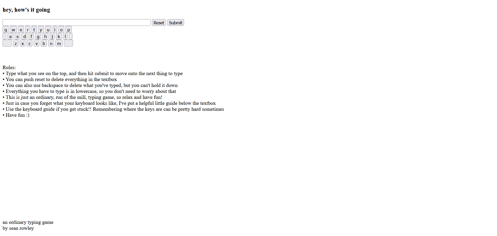

favorite game #1: an ordinary typing game
Link to Game
an ordinary typing game is a game where the player attempts to type the given phrases, only for the game itself to prevent the player from reaching the end. I made it in javascript and html, and I'm really proud of how it turned out.
favorite game #2: Rad Crunch

Link to Game
Rad Crunch is an arcade shooter game where the player shoots at cubes to keep the walls from closing in, while also dodging bullets shot from randomly spawning turrets. The game was made in javascript using the crisp game engine, and given how constrained crisp is, with limited graphics and only allowing "one button games," I'm also really proud of how this one came out.